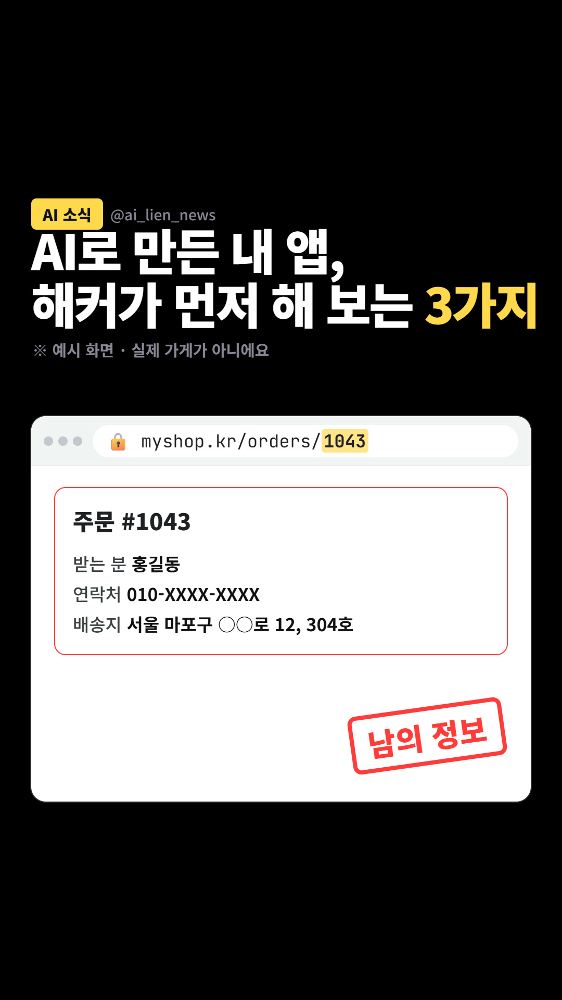
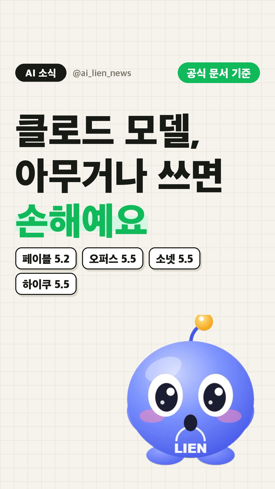
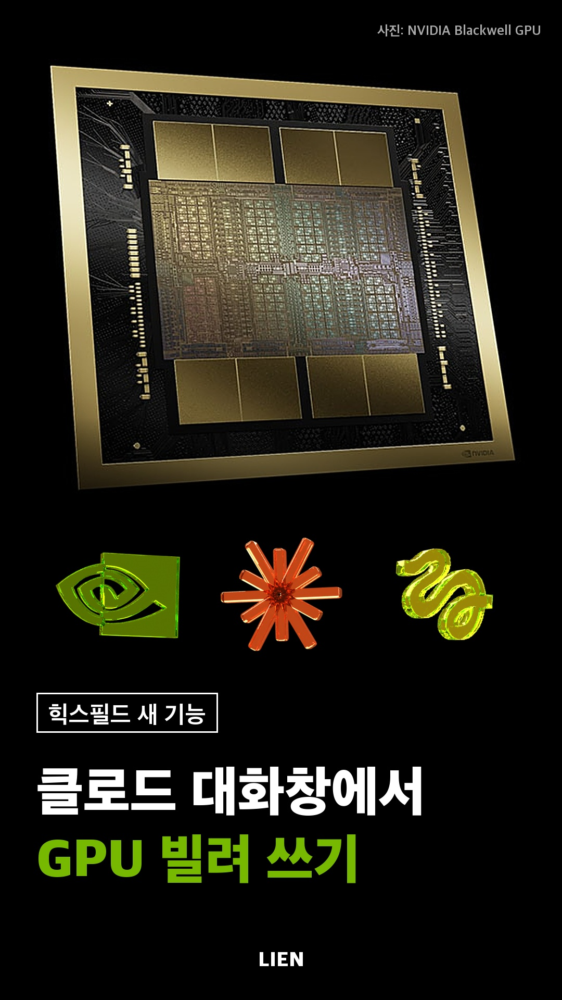
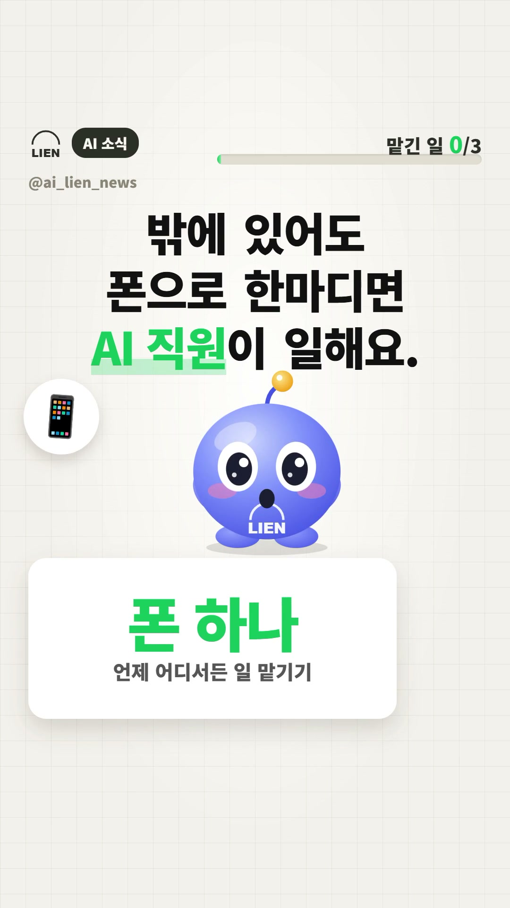
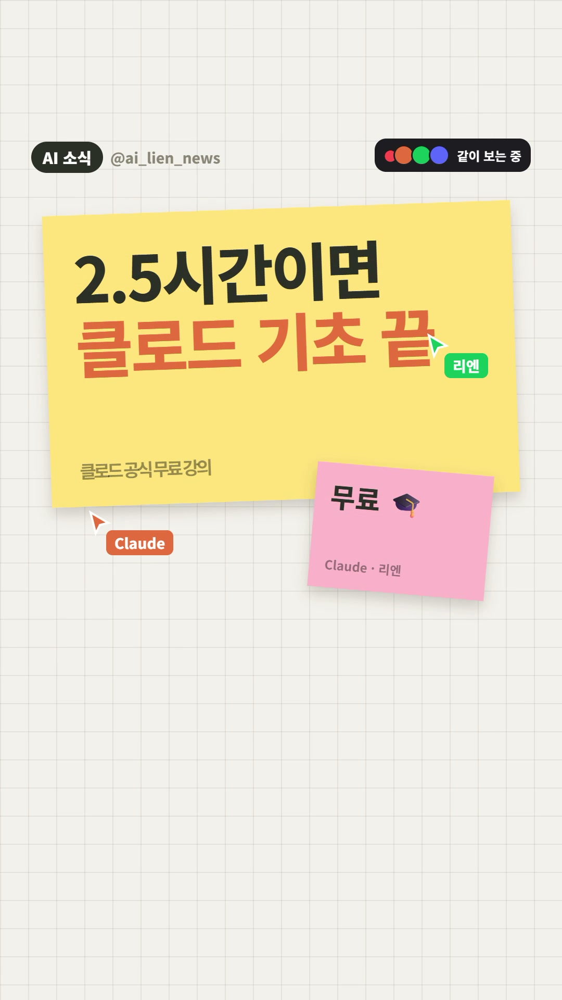
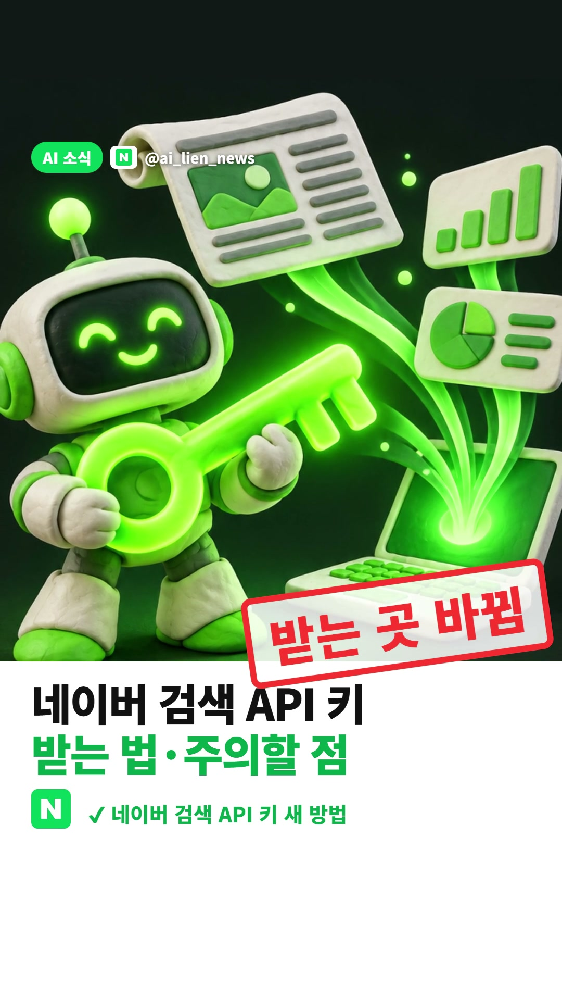
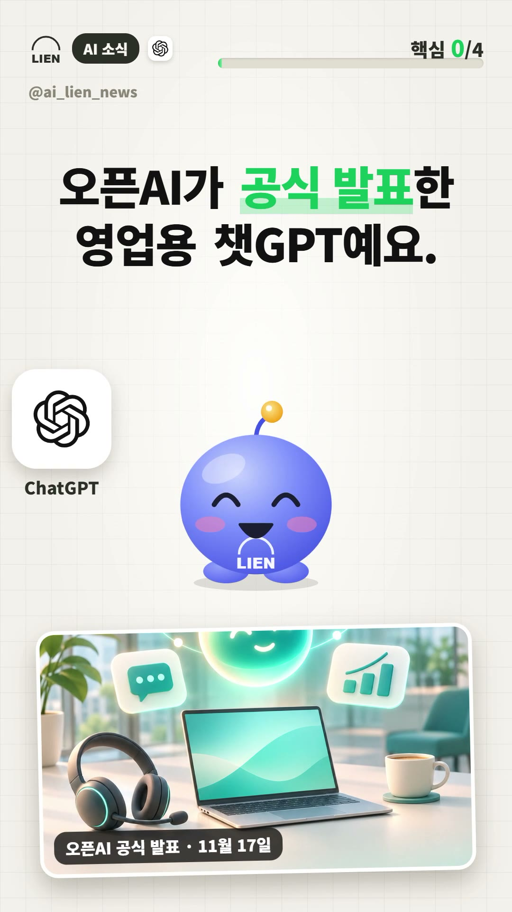
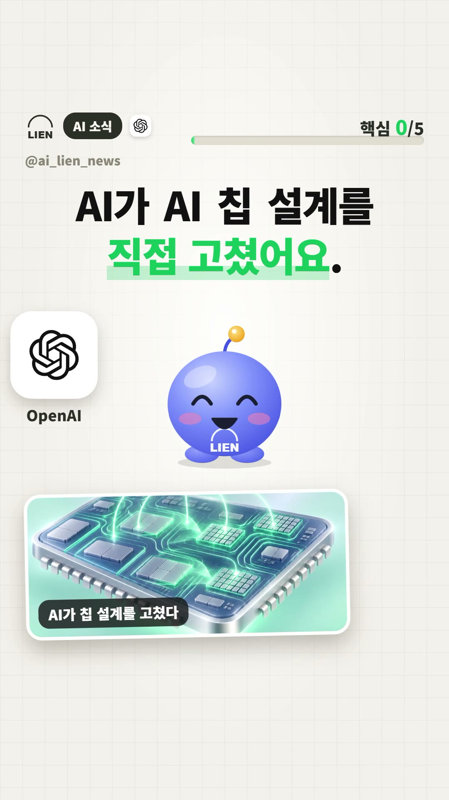

새 소식


릴스

AI로 만든 내 앱 해커가 해 보는 3가지
11-26 · 릴스
AI로 만든 사이트 다 똑같아 보이는 이유
11-26 · 릴스
젠슨 황, 11일 만에 엔비디아 대표 복귀
11-24 · 릴스

클로드 모델·생각 깊이 공식 고르는 법
11-23 · 릴스

클로드 대화창에서 GPU 빌려 쓰기
11-23 · 릴스

폰 슬랙으로 AI 직원 부리는 법
11-23 · 릴스

클로드가 리만 가설 풀었다?
11-22 · 릴스

클로드 101 시작하는 법
11-21 · 릴스
바이브 코딩 용어 7개
11-21 · 릴스
멀티 에이전트 vs 단일 에이전트
11-21 · 릴스

앤트로픽 상장 준비
11-21 · 릴스

네이버 API 키 받는 법
11-21 · 릴스

챗GPT가 영업 일을 도와요
11-20 · 릴스
구글 새 AI 제미나이 4 네온
11-20 · 릴스
클로드에게 인스타 운영을 맡겨요
11-20 · 릴스

AI가 AI 칩을 직접 고쳐 설계했다
11-20 · 릴스
인기 클로드 코드 설정 안전하게 받는 법
11-20 · 릴스
따라 하기 자료
📋
제미나이 태스크, 오늘 바로 일 맡기기켜는 법 5단계와 복사해서 쓰는 요청문 8개
🔌연결 안 되던 프로그램을 클로드에 연결하기 — CLI-Anything 설치부터 말로 시키기까지준비물 · 설치 2줄 · 이미 만든 연결 도구 받기 · 새로 만들기 · 말로 시키기 · 막혔을 때
📖AI 쓸 때 꼭 나오는 단어 20개 — 쉬운 말 단어장뜻 한 줄 · 이렇게 써요 예시 · 클로드 공식 용어집 기준
🔐AI로 만든 앱 보안 점검 — 해커가 해 보는 14가지와 점검 요청문14가지 점검표 · AI에게 맡기는 점검 요청문 · 하나씩 고치는 법
🎨AI 티 나는 사이트 점검표와 고치기 4단계 요청문네 군데 점검표 · 고치기 4단계 · 그대로 붙여 넣는 요청문
🖥️클로드 대화창에서 GPU 빌려 쓰기 — 연결 방법과 가격표연결하기 · /gpu 부르기 · GPU 6종 가격 · 할 수 있는 일 · 끄는 법
🛡️해커톤 1위 개발자의 클로드 코드 세팅, 안전하게 받는 법하는 일 · 공식 주소 · 설치 순서 · 받기 전 확인 3가지
📸클로드 인스타 도구 13개, 설치와 쓰는 순서13개 명령 설명과 설치 3가지
🎓클로드 101 무료 강의, 이 순서로 들으세요가입 → 13강 순서 → 다음에 들을 강의 · 무료로 되는 것과 안 되는 것
🧩홈페이지 용어 7개, AI에게 이렇게 말하세요용어마다 뜻 한 줄 + 그대로 복사해 쓰는 요청문
🔑네이버 검색 API 키, 새로 받는 법과 주의할 점바뀐 곳 · 받는 순서 · 무료 한도 · 키 지키기 · 약관
📱폰 슬랙으로 AI 직원 부리는 법 — 실제 설정 순서준비물 · 슬랙 앱 만들기 · 열쇠 2개 · 연결 프로그램 · 켜 두기 · 직원 나누기 · 막히는 곳
🎚️클로드 모델·생각 깊이 일별 추천표 (앤트로픽 공식 기준)모델 4개 · effort 5단계 · 기본값 · 일별 조합 · 클로드 코드에서 바꾸는 법
LIEN · 당신에게 꼭 필요한 AI 소식과 꿀팁
@ai_lien_news
@ai_lien_news